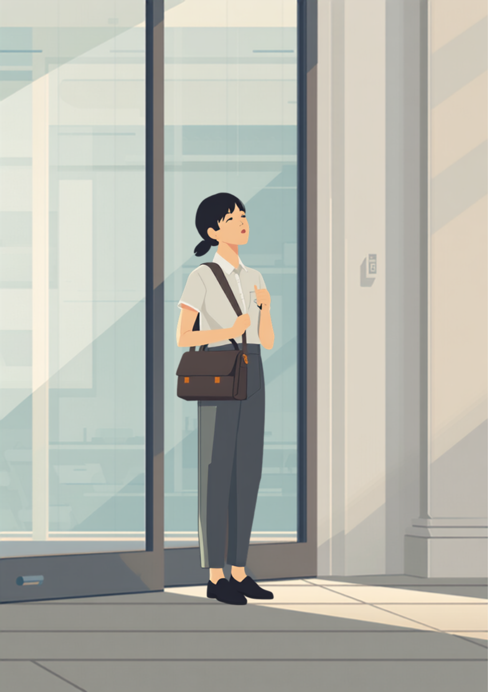
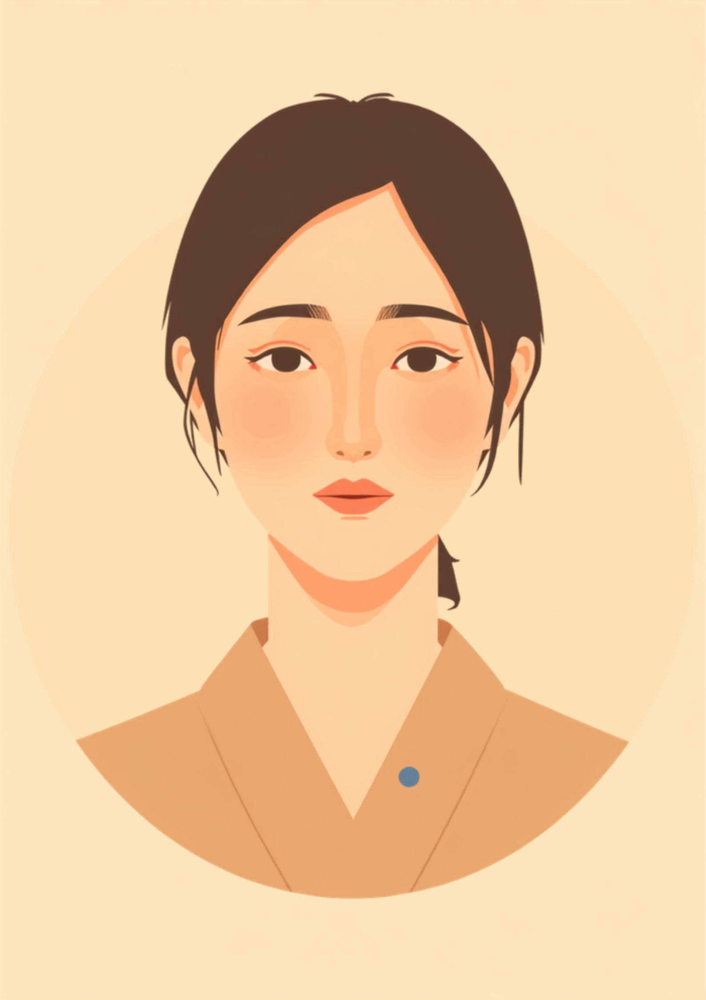

復職初日、それだけで力尽きて、家に着いた瞬間に涙が出たという方に、就労移行支援の現場で何度も出会ってきた。復職前は「元のペースに早く戻さなければ」と思っていたはずなのに、実際にはただ椅子に座っているだけで精一杯だった。この記事では、休職明けの「最初の1週間」をどう過ごすか、心身の準備と具体的な対処を当事者の声をもとに整理する（2026年9月時点の情報です）。

「今日は行けた」それだけで力尽きた初日
就労移行支援の現場で、復職を控えた方から必ずと言っていいほど聞く言葉がある。「元の自分に戻れるか不安です」というものだ。だが実際に復職した方の話を聞くと、多くの場合「戻れるかどうか」よりも先に、「思っていたより疲れる」という感覚に驚くことのほうが多いようだ。
元のペースに早く戻すことより、戻せる体を今日一日で少しずつ作ることのほうが先になる。
朝、いつもの時間に起きる。
電車に揺られる。
デスクに座って、パソコンを開く。
休職前なら何でもなかったはずのこの一連の動作が、復職初日にはひとつひとつ体力を使う作業になる。これは気合の問題ではなく、休んでいた期間の分だけ、体と心が「働くモード」から離れていたことの表れだとされている。
「最初の3日間は、毎日帰りの電車で泣いてました。仕事の内容自体はそんなに難しくなかったはずなのに、椅子に座って周りの声を聞いているだけでどっと疲れてしまって。4日目くらいから少しずつ慣れてきて、1週間乗り越えたら『なんとかなるかもしれない』という感じがしてきました。最初の1週間さえ越えれば、というのは自分の実感としても本当だったと思います。」

最初の1週間は「やりすぎない」が最重要、60%から戻す考え方
復職直後にやりがちな失敗のひとつが、初日から100%の力で頑張ってしまうことだ。初日に無理をすると、2日目以降にその消耗のツケが回ってきて、かえって復帰のペースを崩してしまうという声がある。初日は60%、2〜3日目は80%、4日目以降で100%というように、段階を踏んで戻していく考え方が助けになる場合がある。
最初の1週間で意識したいこと
- 「元のペースで仕事を取り戻さなければ」というプレッシャーをいったん手放す
- 初日は「職場に行く」だけで十分と考える
- 帰宅後は仕事のことを考えず、早めに休むことを優先する
- 1日の終わりに、体調を3段階くらいで簡単にメモしておく
- 週末は完全休養日と決め、仕事関連の連絡は見ない時間を作る
職場での「小さなSOS」を出せるようにする
復職直後は「大丈夫です」と言い続けてしまいがちだ。無理をしていることに、本人が一番気づきにくい時期でもある。しんどいサインを早めに出せるようにしておくことが、長く働き続けるためには重要だとされている。
事前に決めておくと動きやすくなること
- 「しんどくなったら、まず誰に伝えるか」を1人決めておく
- 「疲れました」より具体的な、伝えやすい一言を用意しておく
- 体調確認のための産業医面談を、復職後いつ頃に設定するか決めておく
「復職して2週目、上司に『しんどい』って言うのがすごく怖かったんです。また休むと思われたらどうしようって。でも産業医面談で『我慢して悪化するより、早めに言ってほしい』って言われて、思い切って『今日は集中力が続かないです』って伝えたら、その日は簡単な作業に変えてもらえて。正直、拍子抜けするくらいあっさり対応してもらえました。」
50人以上の事業場には産業医の選任義務があり、復職後の面談を通じて働き方を調整できる場合がある。産業医がいない職場でも、人事担当者や主治医を窓口にして同じような調整を相談できることが多いようだ。
再燃サインと、使える制度・相談先
復職後に状態が悪化することは珍しくないとされている。次のようなサインが重なって続く場合は、早めに主治医や支援者に相談することが助けになる。
- 眠れない日が3日以上続く
- 食欲がなく、体重が急に変化している
- 出勤直前に強い身体症状（吐き気・動悸など）が出る
- 「また休まなければ」という気持ちが強くなる
- 仕事中の集中力が、休職前より明らかに落ちている
傷病手当金という、休職中を支える制度
傷病手当金は、業務外の病気やケガで働けず給与が支払われない場合に支給される制度で、目安として給与の3分の2程度が最長1年6ヶ月受け取れるとされている。時短勤務やリハビリ出勤など、休職時と給与の扱いが異なる働き方に移る際は、手当の扱いが変わることがあるため、加入している健康保険組合や協会けんぽに確認しておくと安心だ（2026年9月時点の情報である）。
相談できる窓口
- 主治医（復職のタイミングや意見書の相談）
- 職場の産業医（50人以上の事業場に選任義務あり）
- リワークプログラムを実施している医療機関・支援機関
- 就労移行支援事業所、就労定着支援事業所（復職後の継続的な相談）
よくある質問
関連記事
この記事に、聞いてみたいことはありますか？
「自分の場合はどうなんだろう」と思ったことを、気軽に書いてみてください。いただいた質問は個別にお返事したうえで、匿名で記事にすることがあります。
mimemime代表。就労支援の現場経験をもとに、障がいのある方の働く不安に寄り添う記事を執筆。